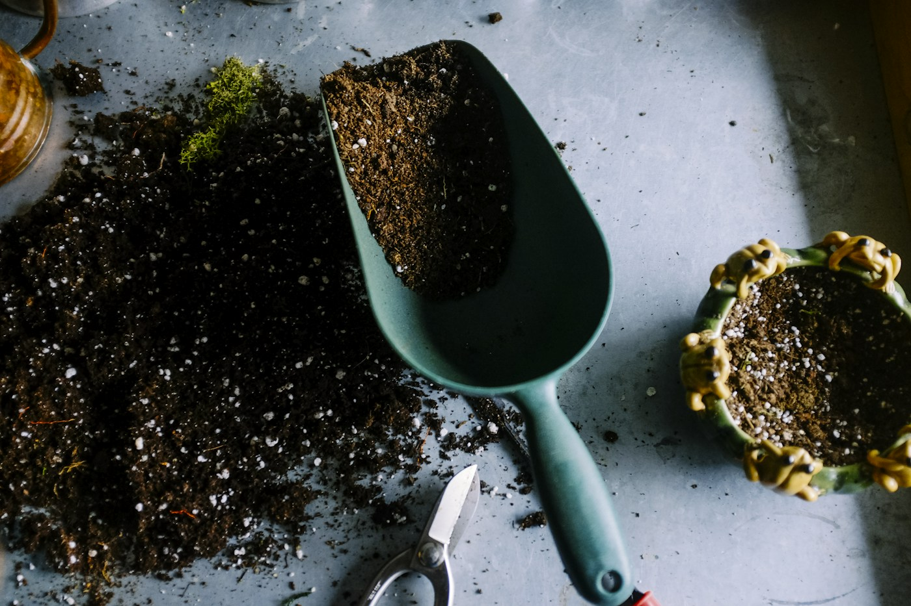
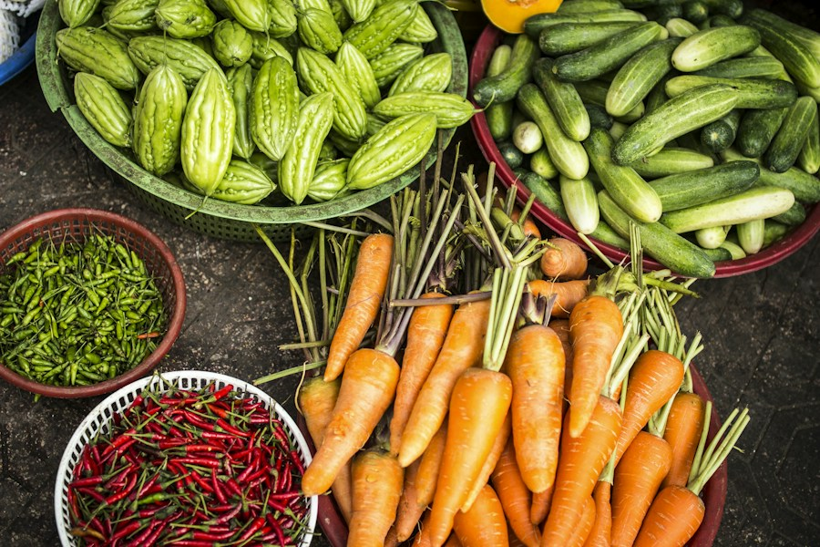
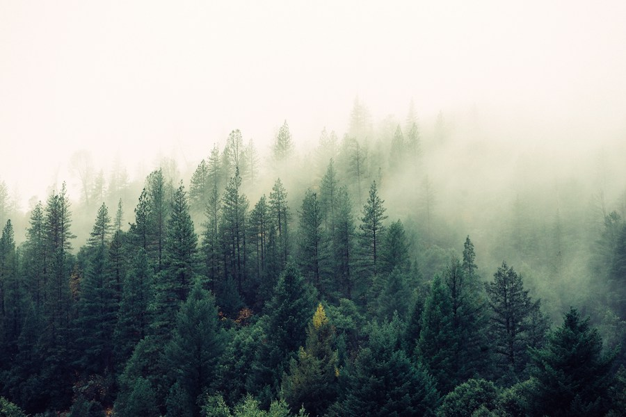

COMUNIDADE
01 /
Horta que aproxima
Transformar espaços ociosos em hortas coletivas, com oficinas de plantio, compostagem e partilha de alimentos.
Quero participarEDUCAÇÃO AMBIENTAL E COMUNIDADE
Promovemos educação ambiental, hortas comunitárias e o cuidado com os espaços verdes do bairro.
Plantio e aprendizado.
Um trabalho feito em comunidade.

Plantando cuidado.
Colhendo futuro.
QUEM SOMOS
A Raízes do Amanhã é uma organização fictícia que nasceu de uma ideia simples: cuidar do meio ambiente também é cuidar das pessoas.
Organizamos oficinas de plantio, atividades sobre alimentação e ações de recuperação de áreas verdes. Os moradores participam do cultivo e compartilham os alimentos colhidos.
Construir comunidades mais sustentáveis e conscientes.
Escuta, colaboração e respeito a todas as formas de vida.
O QUE CULTIVAMOS
Conheça as iniciativas propostas pela nossa ONG.
Cada projeto é um convite para fazer parte.
Transformar espaços ociosos em hortas coletivas, com oficinas de plantio, compostagem e partilha de alimentos.
Quero participar
EDUCAÇÃOPromover encontros sobre alimentação consciente, aproveitamento integral dos alimentos e redução do desperdício.
Quero aprender
MEIO AMBIENTEIncentivar o plantio de espécies nativas e o cuidado contínuo com áreas verdes junto aos moradores.
Quero cuidarFotos ilustrativas dos temas trabalhados nos projetos.
QUEM FAZ ACONTECER
Nossa equipe cuida da organização das atividades, das oficinas e das hortas.
Coordenação e mobilização comunitária
Educação ambiental e oficinas
Hortas e cuidado com áreas verdes
FAÇA PARTE DESSA MUDANÇA
Seu tempo, seu conhecimento e sua vontade de ajudar podem fazer a diferença.
Quero ser voluntárioAjude nas oficinas, no cuidado das hortas ou na organização das atividades. Conheça abaixo como organizar sua participação.
Sementes, mudas e ferramentas de jardinagem podem apoiar os projetos. Entre em contato para combinar os detalhes.
Apresente propostas de parceria e divulgue a causa. Este projeto acadêmico não recebe dinheiro e não possui chave Pix.
VAMOS CONVERSAR
Quer participar ou conhecer melhor a proposta?
Veja ao lado como você pode se envolver.
Site desenvolvido para a disciplina de Introdução à Computação. A ONG e seus projetos são fictícios.
Para uma ação comunitária, o primeiro passo é reunir pessoas e planejar o cuidado com o espaço.
E-mail ilustrativo da ONG
contato@raizesdoamanha.example
Endereço de exemplo, sem recebimento de mensagens.
Rever formas de ajudar